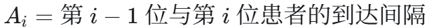
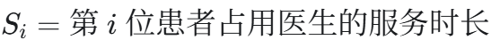
找到最早能够空闲的医生。 患者的接诊开始时间，取“患者到达时间”和“该医生空闲时间”中的较晚者。 更新这名医生下一次空闲的时间。
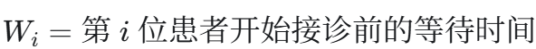
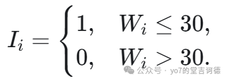
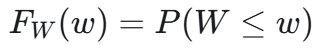
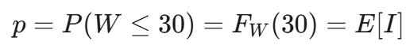
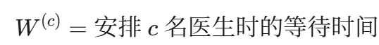
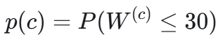
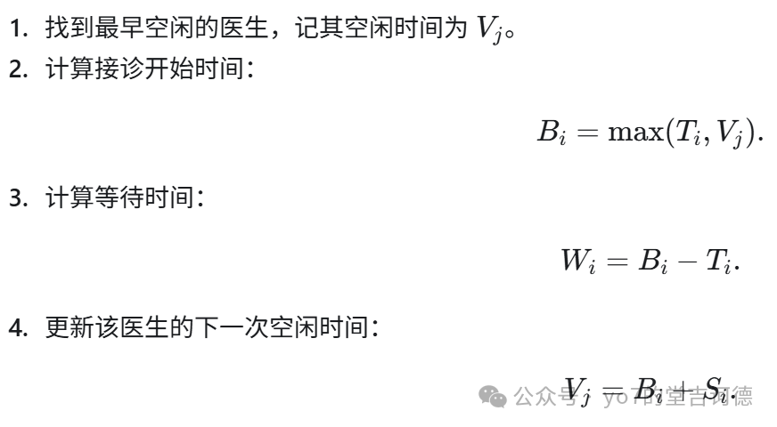
https://www.youtube.com/watch?v=Nbwv5wHQoj0&t=26s

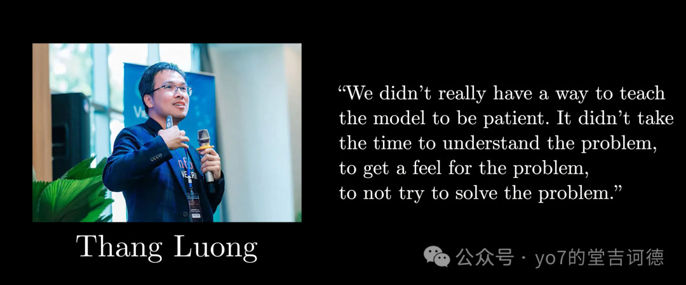
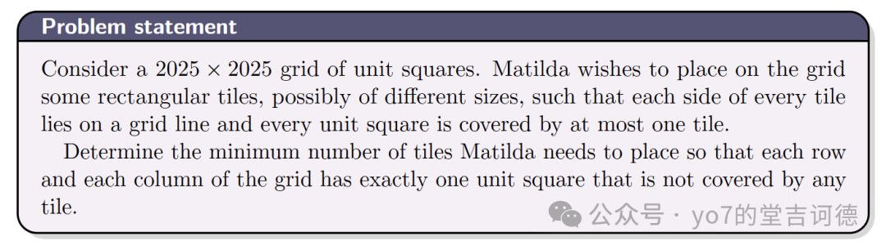
至于为什么产生这个直觉，我感觉可以从几个角度去理解，n 个空格共有 4n-4 条需要贴着砖的边，那么
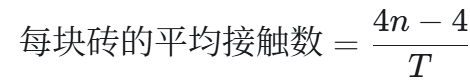
继续拼图发现，空格放在砖边中间，会使周围砖块共用同一行或列，移到角落，更容易形成“风车”式排列。再尝试对称的正方形砖（遇到事情先考虑对称情况，对称不会亏待你的），逐渐拼出错位铺法。
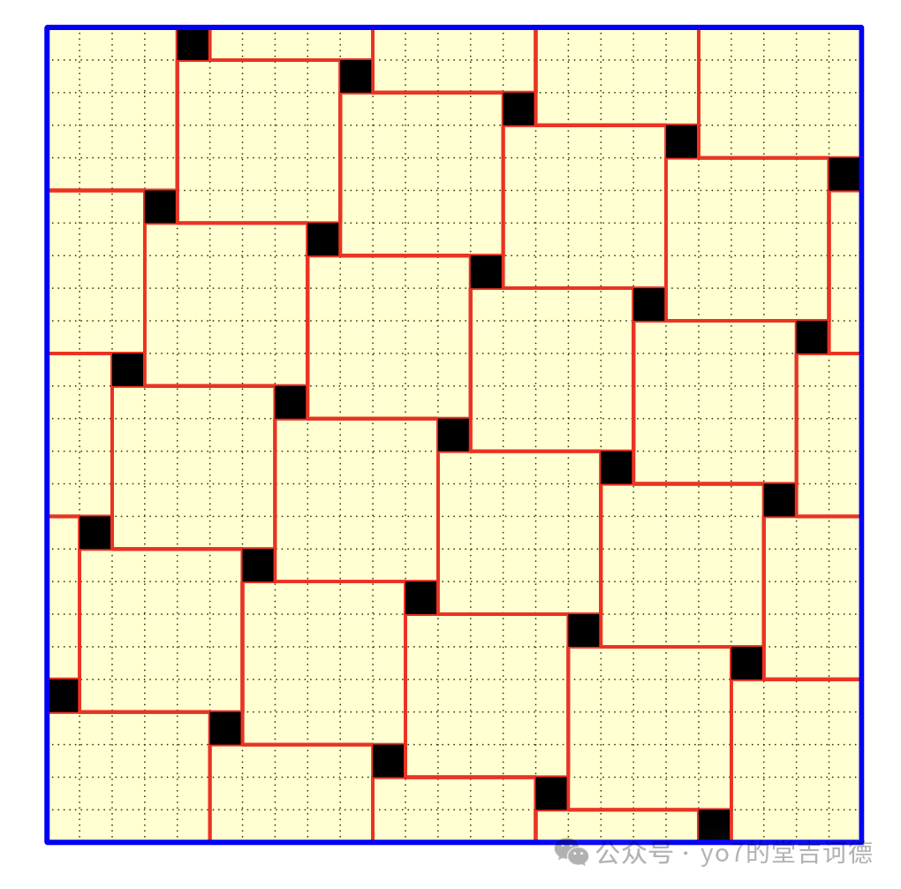
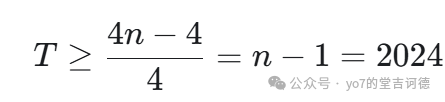
只标记每个空格的右边。由于每列只有一个空格，一块砖不可能贴着两条这样的右边。
仍只能得到 T大于等于n-1，但现在看清了不足，图形左侧的许多砖没有被计入，改选上边，又会漏掉下方的砖。于是自然想到根据位置选择不同方向。
画一条向右上行、一条向右下行的路径，让它们经过空格，划出上、下、左、右四区。各区选择对应方向的空格边；路径上的空格属于多个区域，可以多选边。
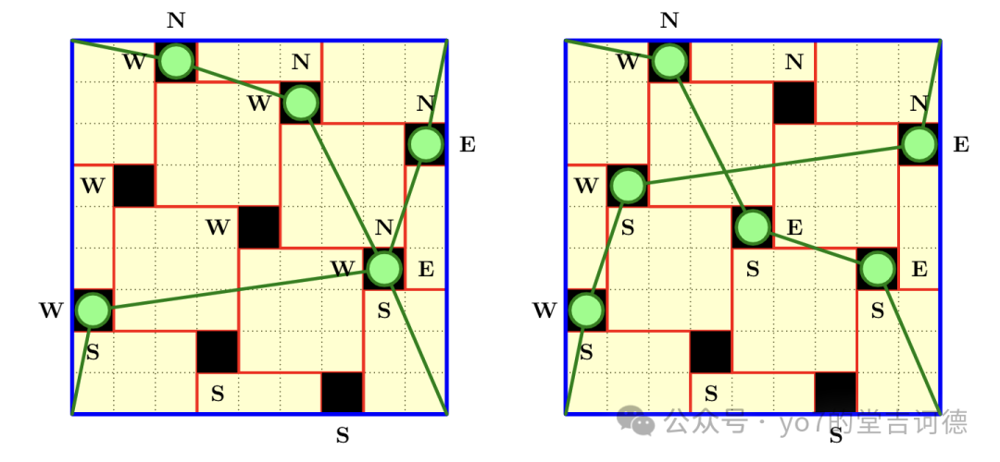
这样既补上漏记，又保留关键性质，每块砖最多贴着一条被标记的边。
若两条路径经过的空格数分别为 a,b，计数就出现了 n+a+b-4，还有交会处的一次修正。现在，任务变成让a+b 至少达到 2k。
从左到右记录空格高度，得到一个排列。上升、下降路径对应递增、递减子序列，于是选择最长的两种，长度为a,b，一种很短时，另一种往往很长，进而猜测
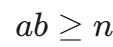
这就是 Erdős–Szekeres 定理。它的证明给每个元素标上以它结尾的最长递增、递减长度这一对数字：所有标签不同，而最多只有 ab 种，因此
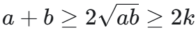
两条路径若共用一个空格，该空格贡献四条边，计数补一；若不共用空格，交会处有一块未被计入的砖，同样补一。于是
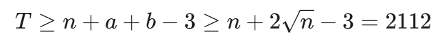
https://terrytao.wordpress.com/2026/09/18/if-math-is-more-than-proof-we-need-to-better-celebrate-the-rest-of-it/
理解ai生成的证明，对困难和想法要给出好的解释，然后对ai的证明进行完善与拓展，形成良好的ai证明的工作流（嗯嗯嗯感觉很多学课真的要进入工业化流水化时代了）
陶哲轩建议，让学生以“讲明白”为研究成果，列出重要的解释难题，并在期刊、招聘和晋升中提高优秀阐释工作的权重。
虽然理解比证明更难客观评价，但可以检查每个关键想法的来源是否交代清楚，我也真的希望能够有高校作为试点来改变评价体系
评价体系需要改变！